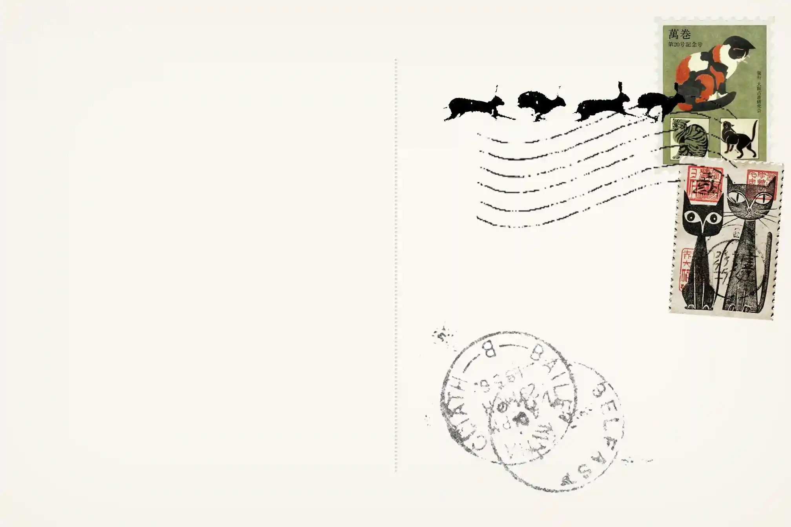

Waking Moment
Waking Moment
 Just For Now
Just For Now
 Eurostile Specimen
Eurostile Specimen
 Counterpart
Counterpart
 Kusama
Kusama
 The nature of existence is to be unfinished
The nature of existence is to be unfinished
 Caribbean Blue
Caribbean Blue
 Pagan poetry on fingerstyle guitar
Fantastic planet
Absolutely (film)
Tree of knowledge no. 5
Lynx in northern minnesota
The predatory wasp of the palisades is out to get us!
Chess.com
A woman is a woman
World's easiest yeast bread
5ninthavenueproject
Everynoise.com
Björk set at the National Theatre, Reykjavík
I love you jennifer b
The fame
When the pawn...
Cupid deluxe
French cuisine
Static and silence
Shell cottage
Pagan poetry on fingerstyle guitar
Fantastic planet
Absolutely (film)
Tree of knowledge no. 5
Lynx in northern minnesota
The predatory wasp of the palisades is out to get us!
Chess.com
A woman is a woman
World's easiest yeast bread
5ninthavenueproject
Everynoise.com
Björk set at the National Theatre, Reykjavík
I love you jennifer b
The fame
When the pawn...
Cupid deluxe
French cuisine
Static and silence
Shell cottage


Type on Types of Type
2025
Publication
An anthology of essays on different approaches to typography within publication design. Curated, edited and typeset as an informative yet approachable gateway into typographic principles, for design students as well as any curious reader.
Includes self-written introduction and original images. Printed on bulky newsprint and semi-transparent polypropolene; handbound with fishing wire.
Waking Moment
2023
Short film
An experimental short film on moments of stillness; decisive and fleeting. Like objects left in darkness picking up faint flickers of reflected light. Inspired by excerpt I need only pause before it and I forget the passage of time,
from In Praise of Shadows—Jun’ichiro Tanizaki.
Frames include digital video and 35mm film stills, collaged and scanned. Sound includes found audio and edited instrumental from Sour Times—Portishead.


Just For Now
2024
Publication, Photography
A photobook documenting observations of a brief odyssey. Quiet moments and visual notes are collected as messages meant for home.
Shot on 35mm film and digital. Handbound with thread and wrapped in embroidered dust jacket (although it is suspected to produce more debris than it fends off).


Eurostile Specimen
2024
Typography
An experimental type specimen for Eurostile, a 1962 typeface by Aldo Novarese. He described Eurostile as a synthetic expression of (their) times,
designing the typeface as a symbol of 60’s civilisation, drawing inspiration from the geometric forms of mid-century architecture and design such as the period’s train windows and television frames.
The specimen is therefore inspired by architectural blueprints and their traditional cyanotype process.


Counterpart
2024
Publication
An experimental newspaper reflecting on my lived experience of twinhood. My identity exists as a constituent of a whole; what is the line between symmetry and duality?
Includes original photography and text. Printed on 45gsm newsprint; the tabloid format is used as a nod towards the commodification and misinterpretation of twin identity in the media.

Kusama
2023
Typography
Concept poster design for a Yayoi Kusama 2021 MONA exhibition, crafted with paper and masking tape.


The nature of existence...
2025
Publication
A pocket-sized collection of prompts, observations and strategies, for the thinker who: worries about appearing unrefined in the presence of others; feels the need to preface before sharing anthing; wonders if they are “living up to their potential”. The collection is a reminder to value progress over perfection (trite but true). Includes excerpts from Fluxus Performance Workbook and Oblique Strategies.
Printed on 50gsm washi paper and impermanently bound by pins. Pages may be added as the reader wishes, as an ongoing reminder that it is natural to be ‘unfinished’.


Caribbean Blue
2023
Photography
A series in response to the chromatic impulse: the aversion of colour; a mistrust of colour; a fear of contamination or corruption through colour (Chromophobia—David Batchelor). How could colour ever be considered something ‘foreign’ and unworthy of serious consideration when the natural world offers so much?
A journey through place, from land to beyond, shot on 35mm film. Across the open sky, up mountains, down cliffs, and out to the endless sea. Colour is neither trivial nor threatening, it is the essence of life itself.

Phoebe is a New Zealand-born Chinese woman. She is also a Narrm/Melbourne-based communication designer who explores the visual and storytelling potential of publication, typography and photography through research, strategy and experimentation, because she is a curious person and the opportunity to shape the way things are seen and understood by the world intrigues her. She designs in hopes to contribute to a future of more sustainability, care and connection.
Her practice often explores specific documentation and the personal archive (what actually matters?), and involves a process infused with analogue methods (things that are actually composed of matter).
Website designed and developed by Phoebe. Resume available upon request.
Say hello:

Sent!